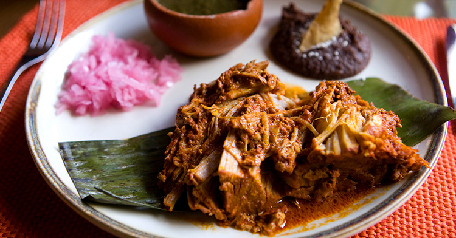

Cochinita Pibil
El platillo estrella de la región. Consiste en carne de cerdo adobada en achiote, envuelta en hojas de plátano y cocinada tradicionalmente en un horno subterráneo o "pib". Se sirve en tacos o tortas con cebolla morada curtida.